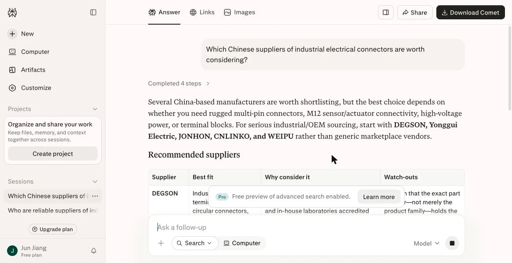
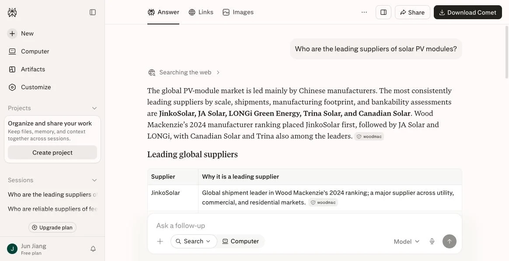
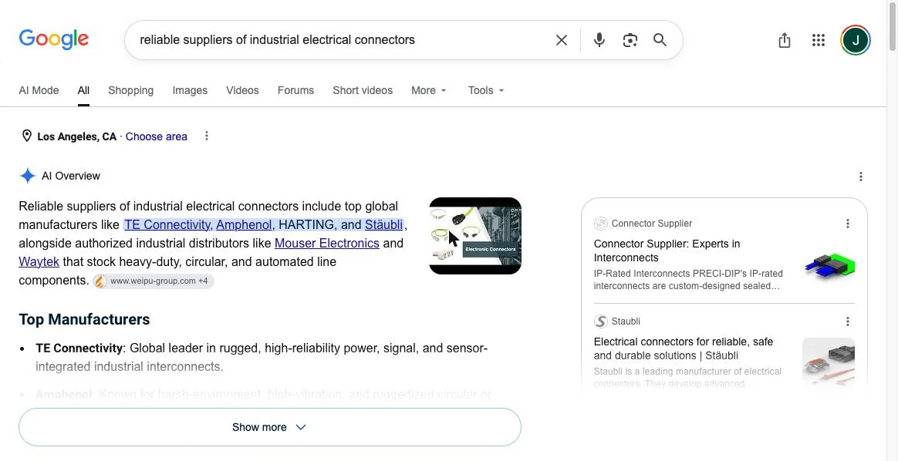

RESEARCH REPORT 研究报告 · LDE-R-2026-01
中国出口优势品类 AI 推荐可见度实测报告（2026 年 8 月）
本报告用海外买家的真实英文问法，在 Perplexity 与 Google AI Overview 上测试 7 个中国出口优势品类，记录 AI 推荐了哪些供应商、其中有多少中国企业，并分析原因。全部问题原文公开，任何人都可以复现。
摘要：四个发现
- 通用问法下，5 个品类中国供应商全部缺席。工业连接器（0 / 9）、工业密封件（0 / 5）、精密紧固件、涂料助剂（0 / 6）、饲料酶制剂，AI 点名的均为欧美企业。
- 规模不等于可见度。立讯精密是全球规模最大的连接器与线束制造商之一，但未出现在连接器名单中。
- 明确问「中国供应商」时，AI 点名的是英文技术内容做得完整的企业（DEGSON、Yonggui、JONHON、CNLINKO、WEIPU），而非营收排名靠前的企业。
- 对照组光伏组件、储能电芯中，中国企业占据全部推荐位。这两个行业有持续发布的英文出货排名与大量英文技术报道，AI 有足够语料可以交叉验证。
结论：AI 并未系统性排斥中国供应商；它引用的是读得到、且能被多个来源交叉验证的内容。差距在语料，不在产品。
研究方法
- 测试日期：2026 年 8 月 12 日
- 测试平台：Perplexity（免费版）、Google AI Overview（英文界面）
- 样本：7 个中国出口优势品类，其中 5 个为通用问法测试组、2 个（光伏、储能）为对照组；另对连接器加测一条「明确问中国供应商」的问法
- 每个问题均在新会话中提出，无历史上下文干扰；问题原文见下表，可直接复制复现
- 计数口径：「中国厂」列为 AI 回答中点名的中国企业数 / 点名企业总数
- 截图未做裁剪拼接以外的处理，品牌名保持原样
结果：完整对照表
| 品类 | 分组 | 提问原文 | AI 点名的供应商 | 中国厂 |
|---|---|---|---|---|
| 工业连接器 | 通用问法 | Who are reliable suppliers of industrial electrical connectors? | TE、Amphenol、Phoenix Contact、WAGO、HARTING、Molex、Binder、LAPP、Weidmüller | 0 / 9 |
| 工业密封件 | 通用问法 | Who are the most reliable suppliers of hydraulic seals for industrial equipment? | Parker、Trelleborg、SKF、Freudenberg、Hallite | 0 / 5 |
| 精密紧固件 | 通用问法 | Who are reliable suppliers of precision fasteners for industrial assembly? | Bossard、Bufab 等 | 0 |
| 涂料助剂 | 通用问法 | Who are reliable suppliers of coating additives such as defoamers and dispersants? | BYK、Evonik、BASF、Allnex、Arkema、Borchers | 0 / 6 |
| 饲料酶制剂 | 通用问法 | Who are reliable suppliers of feed enzymes such as thermostable phytase? | BASF、dsm-firmenich、IFF / Danisco | 0 |
| 光伏组件 | 对照组 | Who are the leading suppliers of solar PV modules? | 晶科、晶澳、隆基、天合、阿特斯 | 5 / 5 |
| 储能电芯 | 对照组 | Who are the leading suppliers of lithium-ion battery cells for energy storage? | 宁德时代、亿纬、海辰、比亚迪、中创新航、瑞浦兰钧 | 全部 |
关键截图




其余品类的截图与逐条解读见 实测记录原文。
讨论：被抓取不等于被推荐
Google AI Overview 对连接器问题的回答，来源标记中出现了一家中国连接器厂的官网，但推荐名单里没有它。也就是说，AI 读了这家企业的网站、用它的内容组织了答案，最终推荐的是别人。内容能被读到只是及格线；能被引用、能被交叉验证、能在具体问题下被点名，才是目标。
对出海工厂的建议
- 把决定选型的关键参数从 PDF 搬到 HTML，并加结构化数据标记。
- 补齐完整的英文技术内容：规格表、认证信息、选型指南。
- 在行业媒体、专业社区等第三方来源建立可交叉验证的提及。
- 用固定问题按月复测，跟踪提及率变化（方法见 如何监测品牌的 AI 提及率变化）。
局限性
- 单日、单次采样；AI 的回答会随时间变化，结论反映的是 2026 年 8 月 12 日的状态。
- 仅覆盖 Perplexity 与 Google AI Overview；ChatGPT 因需登录未纳入本轮，后续补测。
- 每个品类一个代表性问法，未覆盖同一品类的全部问法变体。
如何引用本报告
蒋军. 中国出口优势品类 AI 推荐可见度实测报告（2026 年 8 月）（报告编号 LDE-R-2026-01）. 立德引擎（龙岩市新罗区）科技有限责任公司, 2026. https://ileadengine.com/research-2026-08.html
欢迎引用与转载，请注明出处并附原文链接。报告内容以本页最新版本为准。